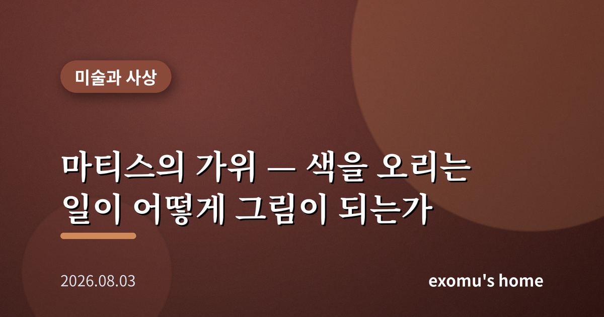
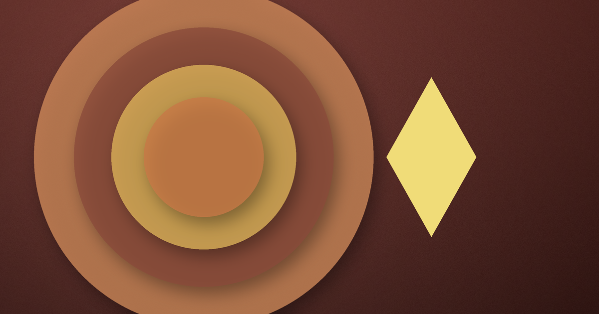
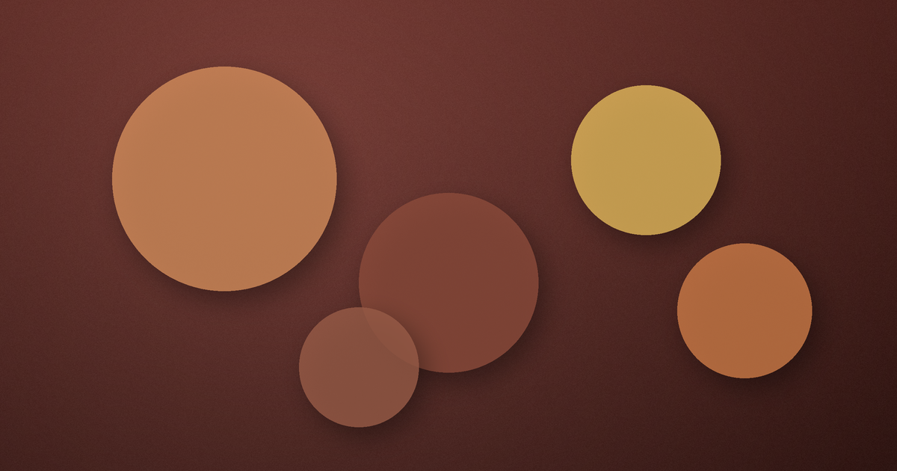

마티스의 가위 — 색을 오리는 일이 어떻게 그림이 되는가

나는 미술관에서 마티스의 늦은 작업 앞에 오래 서 있던 적이 있다. 커다란 벽면에 파란 인체와 초록 잎, 노란 별 같은 형태들이 붙어 있었다. 붓으로 그린 그림이 아니라 색종이를 가위로 오려 붙인 것이었다. 처음에는 '이렇게 단순해도 되나' 싶었다. 그런데 한참을 보고 있으니 그 단순함이 오히려 나를 놓아주는 듯했다. 복잡한 설명을 요구하지 않고, 그저 색과 형태가 주는 리듬만으로 마음을 가볍게 만들었다.
붓을 들 수 없게 된 화가
말년의 마티스는 큰 수술을 겪은 뒤 몸을 자유롭게 움직이지 못했다. 이젤 앞에 서서 오래 붓질을 하는 일이 어려워졌다. 많은 화가에게 이것은 예술의 끝을 뜻했을지 모른다. 그러나 그는 침대와 휠체어에 앉은 채 새로운 방법을 찾았다. 조수가 색을 칠해 둔 종이를 가위로 오려, 형태를 직접 손에 쥐고 공간에 배치했다. 그는 이 작업을 '가위로 그리는 그림'이라고 불렀다. 제약이 그를 멈춰 세운 것이 아니라, 오히려 한 번도 가보지 않은 형식으로 밀어 넣은 셈이다.
나는 여기서 자유라는 말을 다시 생각하게 된다. 우리는 흔히 자유를 '무엇이든 할 수 있는 상태'로 여긴다. 그러나 마티스의 가위는 그 반대를 보여 준다. 할 수 있는 것이 줄어든 자리에서, 그는 색과 형태라는 가장 근본적인 요소만 남겼다. 선택지가 좁아졌기 때문에 오히려 본질이 또렷해졌다. 제약이 형식을 낳고, 형식이 새로운 자유를 낳은 것이다.

색은 감정을 실어 나른다
마티스는 젊은 시절부터 색을 사실의 도구가 아니라 감정의 도구로 다뤘다. 하늘이 꼭 파랄 필요는 없고, 얼굴이 초록빛일 수도 있었다. 그에게 색은 대상을 똑같이 베끼기 위한 것이 아니라, 보는 사람의 마음에 어떤 기분을 일으키기 위한 것이었다. 이런 태도는 뒷날 색을 순수하게 해방시키려 한 여러 화가에게 깊은 영향을 남겼다. 형태를 오려낸 말년의 작업에서 이 생각은 가장 순수한 형태에 이른다. 배경도 원근도 없이, 오직 색면과 형태의 관계만으로 화면이 노래하듯 움직인다.
철학적으로 보면 이것은 재현의 문제와 맞닿아 있다. 예술이 세계를 똑같이 옮겨 담아야 하는가, 아니면 세계가 우리 안에 일으키는 느낌을 옮겨야 하는가. 어떤 사상가들은 예술의 힘이 사물의 겉모습이 아니라 그 사물이 불러오는 정서의 진실에 있다고 보았다. 마티스의 오린 종이는 사과나 잎을 사진처럼 재현하지 않지만, 그것들이 주는 생기와 기쁨은 오히려 더 선명하게 전한다.
벽 전체가 캔버스가 될 때
오려낸 형태들은 점점 커져서 마침내 벽 전체를 뒤덮었다. 마티스는 자신이 설계한 작은 예배당의 벽과 창까지 이 방식으로 다뤘다. 관람자는 더 이상 액자 속 한 장면을 바라보는 것이 아니라, 색으로 이루어진 공간 안으로 걸어 들어가게 된다. 그림이 하나의 대상에서 하나의 환경으로 바뀐 셈이다. 나는 여기서 예술이 무엇을 위해 존재하는가라는 물음을 다시 만난다. 벽에서 떼어내 소유하는 물건이 아니라, 그 안에 잠시 머물다 나오는 자리로서의 예술 말이다. 단순한 색면들이 모여 사람을 감싸는 하나의 분위기가 될 때, 형태의 단순함은 오히려 경험의 깊이를 키운다.
기쁨을 그리는 일의 용기
마티스는 예술이 안락의자처럼 사람을 쉬게 해야 한다는 말을 남긴 것으로 전해진다. 어떤 이들은 이 말을 가볍다고 여겼다. 세상에는 고통과 부조리가 가득한데, 예술이 겨우 위안을 준다니. 그러나 몸이 무너져 가는 노년에, 통증과 죽음을 곁에 두고도 그는 끝내 밝은 색과 춤추는 형태를 만들었다. 나는 이것이야말로 가장 어려운 용기라고 느낀다. 어둠을 모르고 밝은 것이 아니라, 어둠을 다 겪고도 굳이 빛을 선택하는 일.

전시장을 나오며 나는 스스로에게 물었다. 나에게서 무언가가 줄어들 때, 나는 남은 것으로 무엇을 만들 수 있을까. 마티스의 가위는 대답 대신 하나의 태도를 건넨다. 잃은 것을 세는 대신, 남은 색을 손에 쥐고 오려 보라는 것. 단순해진 자리에서 오히려 더 자유로워질 수 있다는 것. 그 태도가 오늘의 나에게도 조용히 필요했다.